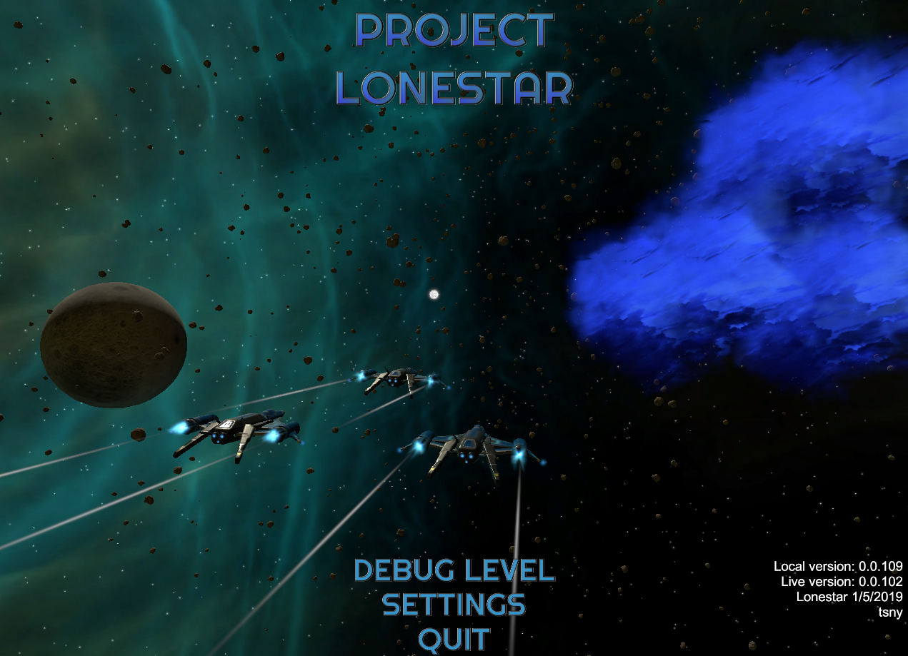

Project Lonestar is a POC space combat and exploration game. It is heavily inspired by Digital Anvil's Freelancer. Originally developed in 2017 in the Unreal Engine and migrated to Unity in late 2018. The initial idea was to remake Freelancer in a modern engine using the original assets. Because of legal concerns and not wanting to implement features that I don't think have aged well over time, the project turned into a spiritual successor.  I always thought that Freelancer was a little bit too slow and seemed too empty. After the main singleplay story is over, there is little to do in the universe. There's a decent amount of lore fit into the small dialogue you can have with the NPCs. Although that is seemingly the extent of it. Any progress you make is just gear for your ship. You either find trade routes or go on endless generated missions that have you fly somewhere, kill stuff, get paid. Project Lonestar aims to expand upon space combat by giving more movement and offensive actions. Modern game mechanics actually feel pretty good in a 3rd person space sim. Such as: